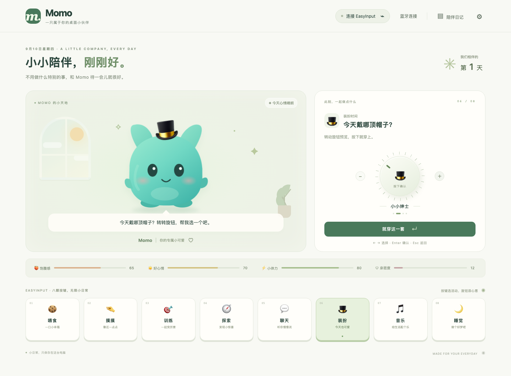
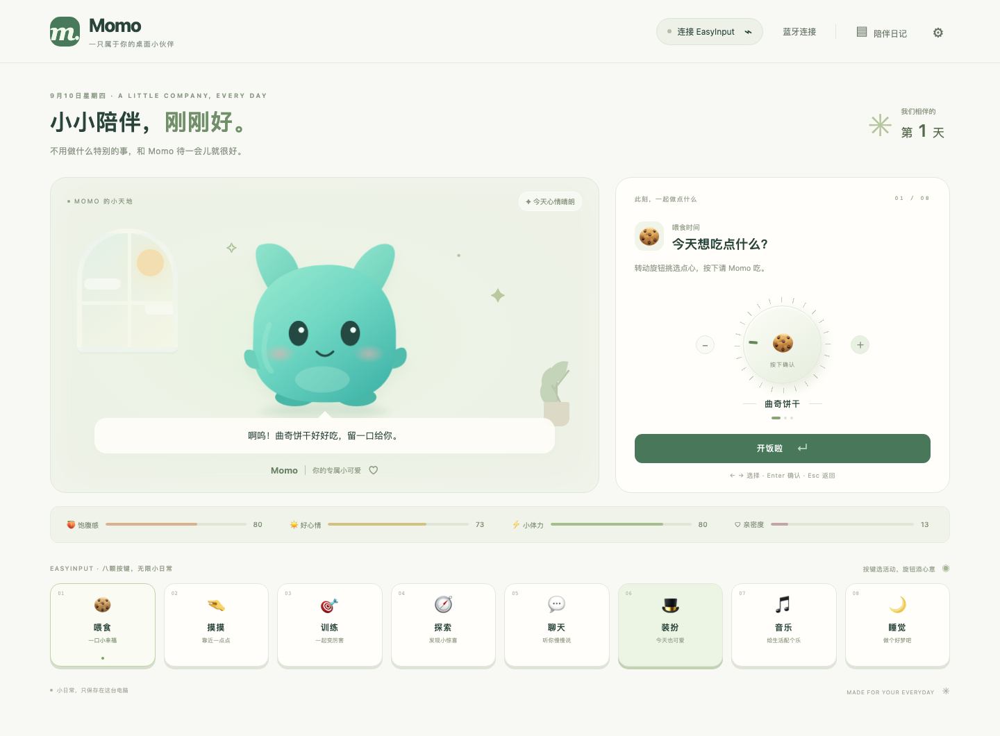
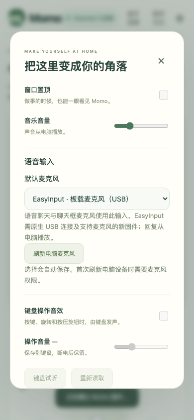

Momo · EasyInput 桌面宠物
八颗按键，一个旋钮，和你一起过普通的小日子。
项目展示稿 · 2026 年 9 月 10 日 · 基于当前 0.5.0 项目及历史开发记录
这是什么产品？
Momo 是一款面向 Mac 的桌面陪伴原型。屏幕里住着一只薄荷绿色的小宠物，你可以喂它吃东西、摸摸它、陪它训练和探索，也可以换装、听音乐、休息或聊天。
配上 EasyInput，互动就有了实体操作的手感：按键选择活动，旋钮挑选选项，再按一下确认。没有硬件时，也能用鼠标和电脑键盘体验。
它适合放在工作或学习的桌面上，在短暂休息时陪你待一会儿。产品希望提供的是轻松、低负担的陪伴。
产品界面与体验
1. 一眼看懂的小房间

左侧是 Momo 的房间和表情，右侧是当前活动与旋钮选项，下方是饱腹感、心情、体力、亲密度，以及固定的八个活动入口。薄荷绿和暖白色让界面保持柔和。图中是装扮预览，确认后才保存选择。
2. 八个按键，各有一个小日常
| 按键 |
活动 |
可以做什么 |
| S1 |
喂食 |
选择曲奇、草莓或牛奶 |
| S2 |
摸摸 |
摸头、拥抱或按摩 |
| S3 |
训练 |
选择难度，玩节奏反应小游戏 |
| S4 |
探索 |
选择地点，遇见随机小事件 |
| S5 |
聊天 |
选择语音聊天、文字聊天或关闭麦克风 |
| S6 |
装扮 |
为 Momo 换一顶帽子 |
| S7 |
音乐 |
播放或停止电脑端轻音乐 |
| S8 |
睡觉 |
让 Momo 休息或醒来 |
例如，按 S1 选中喂食，旋转选择食物，再按下旋钮喂给 Momo。旋转只预览，不会误触发动作。睡觉目前是宠物休息状态，尚无定时闹钟。

图中确认喂食后，Momo 给出回应，饱腹感随之变化。把操作、画面和状态连在一起，是这个项目的主要乐趣。
3. 从打字聊天到开口聊天
这张截图展示的是明确标注的「本地陪伴 · 预设回复」，无需配置 AI。用户也可以配置自己的 AI 服务，启用模型回答。
语音功能已加入项目：按 S5，选择语音聊天并确认，开启所选麦克风。说完后自动断句，回答从电脑播放，结束后恢复倾听。聊天窗口关闭后，会话仍可继续，主界面提供语音状态和关闭麦克风入口。目前采用轮流说话，尚不支持抢话打断。

图中是项目留存的窄屏设置截图。可选择电脑麦克风或 EasyInput 板载麦克风，默认音源会保存。板载音源需要新版固件和原生 USB，BLE 目前只负责控制，不传输语音。设置截图不代表实板收音已验证。
4. 留下一点共同生活的痕迹
喂食、聊天等互动会留下简短日记，最近 200 条保存在本机，并可导出 Markdown。图中内容来自本次演示操作。原文字聊天的日记只记录「聊了一会儿」，不保存聊天原文；语音服务有独立历史记录。
项目已经走到哪里？
项目先完成桌面宠物和 USB 控制，再加入按键、旋钮操作音效，随后增加应用内蓝牙连接和电量显示。近期加入语音聊天、关闭弹窗后的持续对话、音源选择，以及随项目提供的语音服务端。
目前是可运行的开发原型。历史记录已有 USB 握手、真实 BLE 连接和电量上报验证；电脑端也有逻辑、界面及语音流程测试。电量百分比来自电压估算。
语音流程已用合成音频连接真实后端完成多轮验证，但真人麦克风连续三轮体验仍待验收。0.5.0 板载麦克风固件已写入应用区并校验，重启运行及真实收音仍待确认。应用目前主要验证 Apple Silicon Mac，尚未完成签名、公证和全新电脑完整安装体验。
后续先打磨哪些细节？
以下是产品建议，不是已完成能力。
| 优先级 |
打磨方向 |
具体做法与验收目标 |
| 第一批 |
语音可靠性 |
真人连续聊三轮，检查安静和有背景声的场景；拔线、关闭麦克风后立即停采，错误时说明如何恢复 |
| 第一批 |
Momo 人设一致 |
统一文字与语音的称呼、语气和回答长度，清除角色标签。历史语音截图出现过与温柔设定不一致的话术，应避免继续带入产品 |
| 第一批 |
操作反馈 |
明确区分选中、预览、执行成功；逐一确认八键、旋钮转向和长短按，连续操作不重复触发 |
| 第一批 |
首次使用 |
把安装、服务启动、权限和设备连接做成清楚的引导，让新用户完成第一次互动与对话 |
| 第二批 |
陪伴节奏 |
增加安静时段和提醒频率设置，减少重复台词，离开几天也不产生过重的养成压力 |
| 第二批 |
桌面形态 |
提供紧凑陪伴窗口、缩放和位置记忆，验证工作时不会遮挡常用操作 |
| 第二批 |
长期使用 |
增加存档备份与恢复、语音历史管理，校准电量提示，完成长时间运行与断线恢复检查 |
建议先把「按一下有回应、说一句能接住、关掉就安静」做稳定，再扩大玩法。
可以升级的玩法
这些是供后续选择的创意方向，尚未实现。
- 一起专注：选择一段专注时间，Momo 安静陪伴，结束后邀请你休息，并留下小纪念。先做简单计时和反馈即可。
- 共同布置房间：通过日常互动获得小摆件，用旋钮挑选位置。装扮从帽子扩展到整个房间，让变化看得见。
- 探索明信片：把现有随机探索扩展为可收藏的小故事和明信片，每周开放少量新内容。
- 共同回忆：允许用户确认并保存少量偏好，例如喜欢的称呼和音乐，同时提供查看、删除入口。这需要新增记忆机制，不能把现有日记等同于 AI 记忆。
- 节奏合奏：把训练与现有按键音效结合，完成短节奏后得到 Momo 的回应，后续再考虑录制和分享。
- 情绪灯光与声音：探索让硬件灯光回应宠物状态，或让板载扬声器播放对话。当前灯光尚未启用、对话仍从电脑播放，需要单独评估和实板验证。
优先推荐「一起专注」和「探索明信片」：前者增加每天打开的理由，后者给已有探索活动增加持续的新鲜感。房间装饰可以作为下一步长期成长内容。
两分钟演示顺序
- 展示主界面：介绍 Momo 和八键旋钮的操作方式。
- 喂一次食：旋转挑选，按下确认，观察表情和状态变化。
- 换一顶帽子：展示预览与确认的区别。
- 打开聊天：先展示本地文字模式；语音只在现场确认可用后演示。
- 打开日记：展示刚才互动留下的记录。
- 结束时说明下一步：先把真实语音和硬件体验打磨稳定，再加入专注与收藏玩法。
可直接使用的介绍词：
这是 Momo，一只住在 Mac 里的桌面小伙伴。我们给它配了八颗按键和一个旋钮，每个按键对应一件小事：喂食、摸摸、训练、探索、聊天、装扮、音乐和睡觉。旋转选择，再按一下确认，就能看到它的回应。它也有文字和语音聊天能力，还会把一些日常互动记进陪伴日记。接下来，我们希望把操作和语音体验做得更自然，再让它陪你专注、收集探索故事，慢慢拥有共同生活的痕迹。
资料与截图说明
内容核对：当前 README、VOICE-CHAT-VALIDATION、KEYBOARD-VOICE-INPUT、VOICE-SERVER-VALIDATION、BLUETOOTH-VALIDATION，以及 Git 历史截至 7957fe1。状态整理日期为 2026-09-10，历史验证不表示本次重新完成硬件验收。
主界面、喂食、聊天、日记为本次在独立浏览器会话截取的真实应用界面，使用演示存档，无硬件连接、麦克风采集或外部 AI 调用。设置图来自项目已有 docs/momo-voice-input-settings.png。所有截图用于说明界面，不作为实物或收音验收证据。